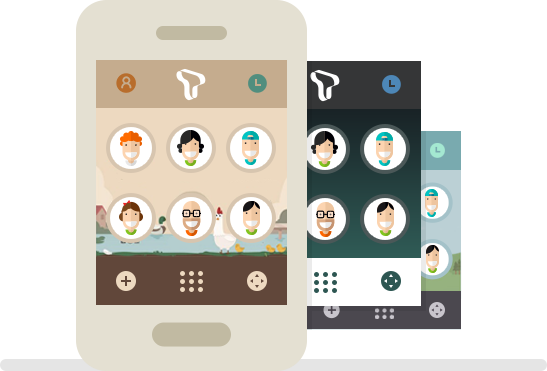
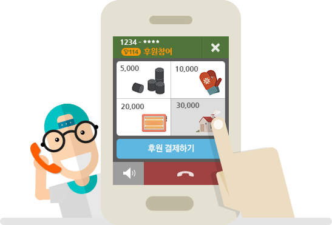

안심통화
모르는 번호?
T전화가 미리 알려드립니다!
하루가 멀다 하고 오는 광고전화
연락처에 저장하고 싶지 않지만,
자주 전화 오는 번호!
안심통화 정보로 누구인지 알려줍니다.
자동녹음
‘녹음’ 하느냐 당하느냐
자동녹음을 통해
통화를 안전하게 지켜드립니다!
자동으로 모든 통화 또는 내가 지정한 사람과의 통화를
최고의 품질로 녹음할 수 있습니다.
녹음한 내역은 ‘통화기록’에서 간편하게 찾고 재생 가능합니다.
my T전화
요금제 잔여량 조회,
이제~ 번거롭지 않아요!
my T전화에서 별도의 로그인 없이
요금제 잔여량, 데이터 사용량 등의
정보를 한눈에 확인할 수 있습니다.
작은 수신화면 모드
웹서핑과 통화를 한번에!
이제, 편하게 통화해보세요.
멀티태스킹을 위해 작아진 수신창.
게임, 웹서핑을 하면서도 통화가 가능해집니다.
그룹통화
여럿이 함께하는
그룹통화를 즐겨보세요!
혼자가 아닌 최대 30명의 친구들과
함께 그룹통화를 할 수 있습니다.
지금, T전화에서 그룹통화를 만나보세요.
전화 테마
매일 쓰는 T전화 화면을 좋아하는
이미지로(테마)
로 설정해보세요!
my T전화에서 다양한 디자인 테마와
컬러 테마 등으로 나만의 T전화를
디자인 할 수 있습니다.

바로 걸기 홈화면
자주 통화하는 번호로 전화 걸기가
간편해집니다!
번호입력이나 검색할 필요 없이,
자주 통화하는 번호들을
T전화 홈 화면에서 모아서 보여줍니다.
보이는 통화
화면을 보면서 똑똑하게 통화해보세요!
단순 음성통화로는 부족하죠~
화면을 보면서 빠르고 정확하게 정보를
확인할 수 있어 통화가 더 편리해집니다.
